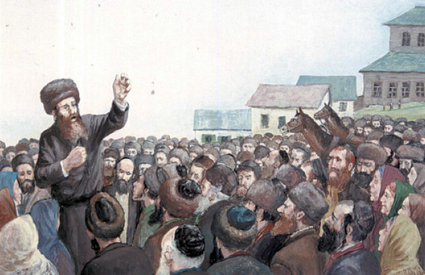

The Baal Shem Tov and Melech Ha’moshiach
A compilation of stories about the Baal Shem Tov and the Geula of the Jewish people. * Presented for Chai Elul, the Baal Shem Tov’s birthday .

HASHEM’S LOVE FOR HIS CHILDREN
Every year, it was customary in the home of the Tzemach Tzedek to have a “latke evening” on one of the nights of Chanuka. The family would gather, his sons and daughters-in-law and their children, and the Rebbe would tell a story.
One year, he told a story about the Baal Shem Tov. He prefaced it by saying that he heard it from his grandfather the Alter Rebbe, who heard it when he was in the holy presence of the Maggid of Mezritch.
Before the Baal Shem Tov was revealed as a tzaddik, he would wander and visit Jewish settlements. In each town that he visited, he would stand in the marketplace or some central area and gather the simple farmers, women, and children around him, and would tell them stories of the Sages. The Baal Shem Tov would explain things clearly so that all could understand.
In one of these towns, he gathered the Jews as usual and began speaking enthusiastically about Ahavas Yisroel and Hashem’s love for the Jewish people. In order to make his point clear, he said the following:
In a certain small town lived a man by the name of R’ Yaakov. R’ Yaakov was an outstanding Torah scholar. He knew the Babylonian Talmud with Rashi and Tosafos by heart.
One day, he was delving into a Tosafos when his little son came over and said something clever. R’ Yaakov was amazed by what he said and stopped learning.
The same is true for Hashem, said the Baal Shem Tov. As our Sages say, “For the first three hours, Hashem sits and is occupied with Torah. Then He stops, as it were, in order to be involved in the prayers and requests of Yisroel.” That is how great Hashem’s love for the Jewish people is.
When Hashem created man, He told the angels that He wants to create a man. The angels asked, what do You need him for? But Hashem created man anyway.
A Jew gets up in the morning and runs to pray vasikin with a minyan and then all day he is preoccupied and still, when it comes time for Mincha, he sets his affairs aside and runs to shul. And between Mincha and Maariv he listens to a shiur in Ein Yaakov and then he prays Maariv and tells his family what he learned in the Ein Yaakov shiur. Then Hashem gathers the angels and takes pride in the Jews He created and says: You angels don’t have the burden of parnasa on your necks. You don’t have wives and children to support. You don’t have the concerns of this world and you have no taxes to pay. Man needs to support his wife and children and he has many worries. In addition, he has taxes to pay. Above all else, he has the burden of this difficult galus, and yet he conducts himself as he should. Then Hashem takes pride in him.
Hashem loves the Jewish people. So too, each of us ought to love his fellow.
If people would picture how Hashem takes pride in a Jew above everything else He made, it would have a profound effect.
(Seifer HaSichos 5699)
AN ATTEMPT THAT FAILED
R’ Eliezer Zev, the Saba Kadisha of Kretchnif, told an awe-inspiring story about an attempt that the holy Baal Shem Tov made together with other kabbalists in order to bring and hasten the coming of Moshiach:
One day, five great tzaddikim gathered in order to hasten the Geula. The Baal Shem Tov was the leader and with him were R’ Meir the Great of Premishlan, R’ Moshe Fastig, the brother of R’ Meir the Great, who was a hidden tzaddik, R’ Shabsi of Rashkov and R’ Tzvi Patiker. They convened in an abandoned house on the edge of a small, distant town. There, away from all prying eyes, they hoped to unify through their kabbalistic intentions and to intensify their prayers to hasten the Geula.
The Satan saw this and knew that if these five tzaddikim were successful in bringing the Geula then this would be his bitter end. He disguised himself as a simple person, one of the residents of the little town, and he went to the home of the governor and said that in an abandoned house were five Jews who plotted to burn down the town.
When the governor heard this, he quickly sent his policemen to arrest them as they were plotting, but the tzaddikim sensed what was happening behind their backs. They realized they were about to be arrested and used combinations of letters, according to Torah and kabbala, to make themselves invisible. Only R’ Meir the Great of Premishlan did not want to use the holy names to save himself and he did nothing.
A few minutes later the police arrived and were surprised to see one Jew sitting there, instead of a group of conspirators. Nevertheless, they arrested him and put him in chains and brought him on the police wagon to jail.
On the way, R Meir realized that sitting in jail would interfere with his service of Hashem; especially if he would not be released until the next day, he would be unable to put on t’fillin. Without anyone noticing him, he got off the wagon and went home.
The Satan was successful in that he disbanded the group of tzaddikim and the auspicious moment passed.
(Raza d’Uvda)
REFUSING MOSHIACH’S REQUEST
R’ Leib HaMochiach (lit. the rebuker) of Polnoye related:
One Friday, my master the Baal Shem Tov asked me to join him on a trip. Although I did not know where he was going, I realized that this was another trip for his holy and hidden purposes.
Within a short time, we had covered a vast distance. We sped past villages and towns, fields and forests. It all passed enormously quickly with the K’fitzas HaDerech (lit. jumping of the way) that was typical of travels with the Baal Shem Tov. Within a short time, we had arrived in an isolated village where the Baal Shem Tov told the gentile wagon driver to stop the horses near one of the houses.
Before we got down from the wagon, how surprised I was to see a distinguished, handsome man coming out of the house. He welcomed us warmly.
The Baal Shem Tov spoke privately with him for a while and I did not hear what they said. Then the man raised his voice and I heard him ask that we spend Shabbos with him. To my astonishment, the Baal Shem Tov refused.
I could not understand his adamant refusal but I said nothing. I figured I would wait for a time when I could ask my master about it.
We made our way home with the same speed. Although the sun was about to set, we managed to arrive back in Mezhibuzh before Shabbos.
I wanted to ask my master about what happened, but he preempted me and one day he explained it to me:
“Do you know who that man was?” he asked me. I did not know what to say. The Baal Shem Tov said, “That was the Moshiach of our generation.
“In every generation, as you know, there is someone fit to be Moshiach. When the time comes, he will be revealed in his glory.”
I could not remain silent and I said, “Then why did you refuse to stay with him for Shabbos despite his importuning us?”
The Baal Shem Tov sat thinking and then he said quietly, “I saw that it was decreed that he would pass away on that Shabbos, and how could I witness the loss and the passing of our anointed king?”
(Shaar Yisachar)
ASPECT OF MOSHIACH
When Reb Elimelech of Lizhensk heard about the holy Baal Shem Tov, he yearned to see him but he delayed his trip because he was concerned about the bittul Torah involved in travel.
R’ Elimelech was accustomed to solitary meditation in the mountains. One day, he envisioned the Baal Shem Tov standing on the mountaintop and throwing himself into the ravine. At that moment, his body split into six hundred thousand sparks, corresponding to the six hundred thousand Jews.
R’ Elimelech rushed to the bottom of the mountain and raised one of the sparks and saw it contained all the souls of Israel.
Since at the time he had the vision the Baal Shem Tov had already passed away, R’ Elimelech began his journey to his successor, the Maggid of Mezritch.
After some time, R’ Elimelech said, “The true tzaddik is the aspect of Moshiach and his soul includes all the souls of Israel.”
(Shema Shlomo)
A LADDER STANDING AT MOSHIACH’S CHAMBER
The Baal Shem Tov would spend a long time on davening the Shmoneh Esrei. It sometimes lasted hours after the other people had already finished. Many of the people were not used to this, and so while the great disciples would wait patiently and gaze upon the holy face of the tzaddik, the simple people would go home, eat something, and then return to continue davening. Upon their return, they would find that the Baal Shem Tov had not yet finished davening.
One day, as the disciples waited for him to finish, they were overcome by great hunger pangs and felt very weak. They looked at the time and saw that they had time to run home, eat something, and return before he finished Shmoneh Esrei.
However, upon their return they were shocked to see that the Baal Shem Tov had finished davening and was waiting for them. They were ashamed and quietly continued davening.
As always, when they saw something unusual, they waited for the right time to ask about it. After some time, they asked the Baal Shem Tov why he had finished early that day. He answered with a parable about a man with keen vision who stood with his friends next to a tall tree. He suddenly noticed a beautiful bird singing sweetly at the top of the tree; his friends noticed nothing.
The man wanted to climb up and capture the bird, but since the tree was tall and he would not be able to do it himself, he asked his friends to stand one upon the other’s shoulders and he climbed up until he reached the bird and caught it.
Said the Baal Shem Tov, “The same is true for me. When I daven Shmoneh Esrei, wondrous things are revealed to me. However, I yearn to climb up and reach the supernal chamber called kan tzipor (lit. the bird’s nest), which is the chamber of Moshiach. Since this chamber is very high, I cannot go up there on my own. When you are standing on top of one another, I am able to reach up high. But today, when you left the shul, I fell from the lofty levels I had reached. Having nothing else to do, I finished davening.”
Regarding this, one of the great Chassidim said on the words, “And Moshe said to them, stand here and I will hear what Hashem has commanded you.” Stand here near me, and then in your merit and with your strength, I will be able to hear what Hashem commands.
(Sippurei Chassidim)
YAAKOV AVINU’S NIGGUN
All his life, the Baal Shem Tov yearned to remember the niggun of Yaakov Avinu and was unable to. What was this niggun?
This is what he told his talmidim:
“I heard a beautiful niggun when I was in my first incarnation as a sheep in Yaakov’s flock. Yaakov would sing this niggun when he cared for the sheep. He would pour out his heart to Hashem until he heard Hashem’s voice blessing his sheep. I have a tradition that Yaakov sent his sons to Yosef in Mitzrayim with this niggun, as it says, ‘And Yisroel their father said to them, if so, this is what you should do, take m’zimras (from the fruit, but can also be read as from the song) of the land.’ (B’Reishis 43:1)
“Just one other time was I able to hear this niggun, when I passed by a shepherd who was singing this song to his sheep. When I heard this, I nearly turned back into a sheep.”
When the Baal Shem Tov wanted to move to Eretz Yisroel, he said, “Perhaps I will merit once again hearing that niggun. When I learn it well and know it, I will not forget it again. When this niggun becomes known to all, the Geula will come to the world.”
THE BAAL SHEM TOV’S CHIDDUSH
On the night of Acharon shel Pesach 5727, there was the following conversation between the Rebbe and his brother-in-law, R’ Shmarya Gurary (Rashag):
Rashag: The Rebbe Rayatz said that the Baal Shem Tov revealed that on Acharon Shel Pesach there is the revelation of Moshiach. Was that the chiddush of the Baal Shem Tov?
The Rebbe: In the Haftora it speaks explicitly and at length about the future Geula through Moshiach.
Rashag: Then why did the Rebbeim say that the Baal Shem Tov innovated the Seudas Moshiach?
The Rebbe: Because the Baal Shem Tov once said that the revelation and luminescence of Moshiach needs to be absorbed internally and this is through the Seudas Moshiach, in that a Jew eats a physical meal and it becomes part of his flesh. The inyan of the Baal Shem Tov was to reveal G-dliness in the world; that is the innovation of Chassidus, that the matters have an effect in an inward manner.
Menachem Ziegelboim. "The Baal Shem Tov and Melech Ha’moshiach." Beis Moshiach, no. 893 (August 19, 2013).